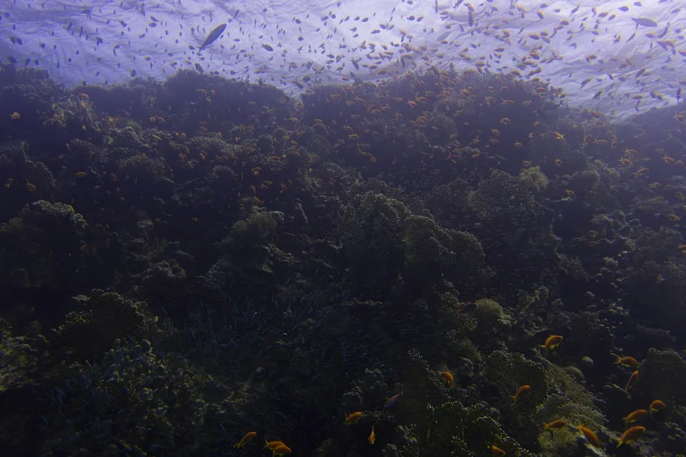

КРАСНОЕ МОРЕУвидеть другой мир.
Увидеть другой мир.
Просто нырнув.
Снорклинг, рифы и целый день на воде.

Красное море, древние храмы и шумный Каир.
6–14 февраля 2027 · 8 ночей · 4 друга.
Сначала — солёные волосы и Красное море. Потом — храмы, которым тысячи лет. И напоследок — затеряться среди улочек Каира, найти свой кошари и встретить закат у Нила.
6–14 февраля — 9 дней и 8 ночей в Египте.
Дома в Воронеже — утром 15 февраля.
Это условия подбора билетов. Поезда и рейсы пока не выбраны: учитываем дорогу между вокзалом и аэропортом, регистрацию, контроль и получение багажа. Даты возвращения считаем по прилёту в Москву.
Прилетаем в Хургаду, улетаем из Каира.
Каждый переезд открывает что-то новое.
Хургада → Луксор: закладываем 4–6 часов на автобус или трансфер. Вечером 10 февраля — перелёт в Каир.
Рейсы, расписание и багаж проверяем перед покупкой. Линии на карте показывают последовательность, а не навигационный трек.
Есть план. И есть место спонтанности.
Выбирай дату, чтобы заглянуть в этот день.
420 000 ₽ на всю компанию
Резерв — 5 100 ₽: сюда перенесли 2 300 ₽ после сокращения жилья и питания. Для обоих вариантов используем одну смету; реальные цены на разные даты сравним отдельно. Сувениры — по желанию.
Это ориентир, а не стоимость бронирования. Самые чувствительные статьи — билеты и жильё. Если они подорожают, планируем 110–120 тысяч ₽ на человека. Бронирований пока нет.
Собираем не галочки в списке,
а истории, которые потом будем рассказывать.

Снорклинг, рифы и целый день на воде.

Сафари — если захотим добавить немного скорости.

Рынки, каркаде и разговоры до позднего вечера.
Потом фуль, таамея, кофта и ум али. Маленькие кафе, большие порции и новые любимые блюда.
 Что сколько стоит
Что сколько стоит Прогулка по Марине, чай в местной кофейне, шиша по желанию и шум города вокруг. Без обязательной программы и гонки за впечатлениями.
Плановые ориентиры из нашей сметы.
Не меню и не подтверждённые тарифы.
| Что покупаем | На месте | Примерно в рублях |
|---|
Две двухместные комнаты или апартаменты с двумя спальнями. Чисто, хорошие отзывы, удобный район. По возможности — завтрак.
Немного подготовки —
и больше спокойствия в дороге.
План собран 16 ноября 2026. Расходы взяты из предварительной сметы поездки. Официальные ссылки ниже помогут проверить изменяемые условия ближе к вылету.
Не подтверждены конкретные авиарейсы, размещение и рейс автобуса на наши даты. Александрию оставляем на другое путешествие: в этих восьми ночах уже достаточно открытий.
9 дней, которые станут общей историей.
Ориентир — 105 000 ₽ на человека.
В Москву — вечером 14 февраля, в Воронеж — утром 15-го.
Сначала согласуем идею. Потом проверим стыковки и забронируем.